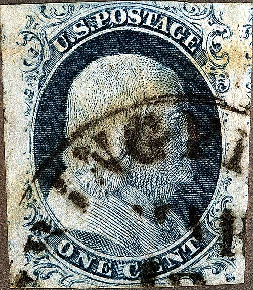
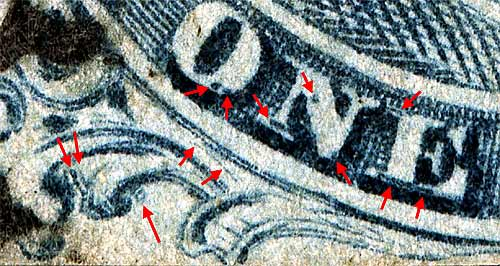
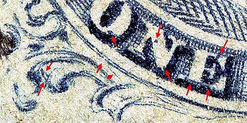
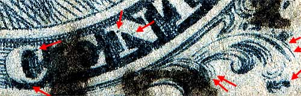
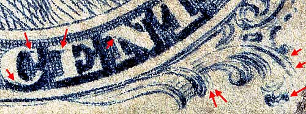

| 1¢ Franklin Issue of 1851-1857, PLATE 1 LATE.
Pos 86R1L, (Scott #9) |
| Scott #9 Blue, Relief B, Type IV Issued both imperforate and perforated. Perforated copys are more scarce. DOUBLE TRANSFER |
|  |
| Figure 1. Detail view of double transfers found on this position. The amount and variety of marks, make this position very easy to identify.
 |
| Figure 2. Detail view of double transfered plating marks from another 86R1L example.
 |
| Figure 3. Detail view of numerous double transfer marks found on this position.  |
| Figure 3. Detail view of double transfers from another 86R1L example.  |